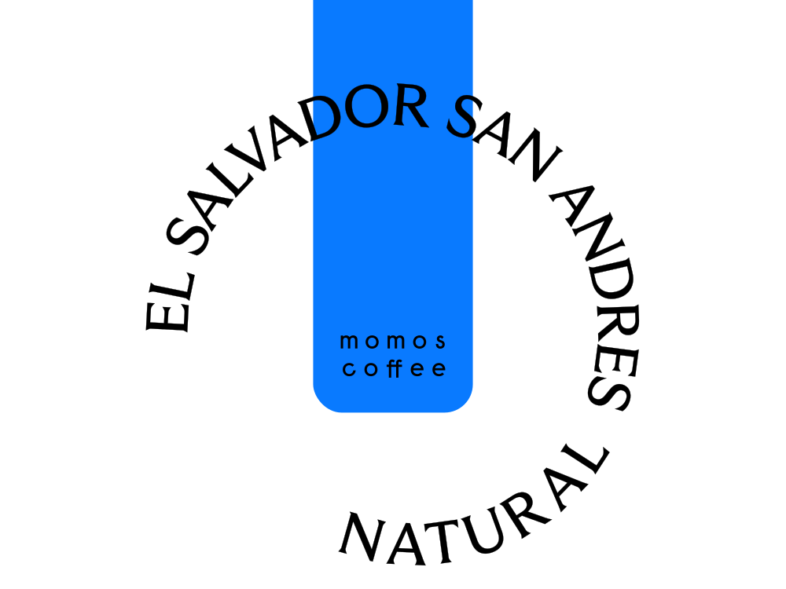

| 엘살바도르 산 안드레스 내추럴 | |
|---|---|
| 농장 | El Salvador, Alotepec-Metapán |
| 지역 | Colombia, Huila |
| 품종 | Pacamara |
| 가공 | Natural |

| 볼리비아 센다 살바헤 | |
|---|---|
| 농장 | Finca Senda Salvaje |
| 지역 | Bolivia, Caranavi, Loa |
| 품종 | Catuai Rojo |
| 가공 | Washed |
이번 달에는 국내의 멋진 로스터리들 중 부산에 위치한 로스터리들의 커피를 소개합니다. 바닷가로 드라이브 가기 좋은 6월, 부산 고유의 생동감 넘치는 분위기와 어울리는 커피 2종입니다.
| 엘살바도르 산 안드레스 내추럴 | |
|---|---|
| 농장 | El Salvador, Alotepec-Metapán |
| 지역 | Colombia, Huila |
| 품종 | Pacamara |
| 가공 | Natural |
| 볼리비아 센다 살바헤 | |
|---|---|
| 농장 | Finca Senda Salvaje |
| 지역 | Bolivia, Caranavi, Loa |
| 품종 | Catuai Rojo |
| 가공 | Washed |
엘살바도르 산 안드레스 내추럴
| 로스팅 | 모모스커피 |
| 생두 | 농장 | Finca San Andres |
| 지역 | El Salvador, Alotepec-Metapán | |
| 품종 | Pacamara | |
| 가공 | Natural |
| RBC 추천 | 체리와 와인의 향미가 연상되는 짙은 여운의 커피입니다. 풍부한 향과 농밀한 단맛을 가진 커피를 즐기는 분께 추천드려요. |
| RBC 레시피 | 아이스 추출시에도 짙은 향미를 잘 전달하는데 집중했습니다. |
| Hot | 원두량 16g / 분쇄도 5 (EK43 기준) / 물 온도 96도 / 추출 시간 총 1분 25초(에어로프레스) / 물 240g 투입 후 1분 25초에 추출 종료(30초 블루밍, 물 190g 추가 투입 후 1분에 25초 동안 천천히 프레스), 20g 가수 |
| Iced | 원두량 16g / 분쇄도 5 (EK43 기준) / 물온도 96도 / 추출 시간 총 1분 25초(에어로프레스) / 물 150g 투입 후 1분 25초에 추출 종료(30초 블루밍, 물 100g 추가 투입 후 1분에 25초 동안 천천히 프레스) |
볼리비아 센다 살바헤
| 로스팅 | 히떼로스터리 |
| 생두 | 농장 | Finca Senda Salvaje |
| 지역 | Bolivia, Caranavi, Loa | |
| 품종 | Catuai Rojo | |
| 가공 | Washed |
| RBC 추천 | 잘 익은 오렌지 같은 풍부한 단맛이 매력적인 커피입니다. 진득한 단맛과 생동감 있는 산미를 가진 새콤달콤한 커피를 즐기는 분께 추천드려요. |
| RBC 레시피 | 아이스 추출시에도 새콤달콤 밝은 산미와 단맛을 잘 전달하는데 집중했습니다. |
| Hot | 원두량 17g / 분쇄도 5(EK43 기준) / 물 온도 96도 / 추출 시간 총 1분 25초(에어로프레스) / 물 240g 투입 후 1분 25초에 추출 종료(30초 블루밍, 물 190g 추가 투입 후 1분에 25초 동안 천천히 프레스), 20g 가수 |
| Iced | 원두량 17g / 분쇄도 5(EK43 기준) / 물 온도 96도 / 추출 시간 총 1분 25초(에어로프레스) / 물 150g 투입 후 1분 25초에 추출 종료(30초 블루밍, 물 100g 추가 투입 후 1분에 25초 동안 천천히 프레스) |